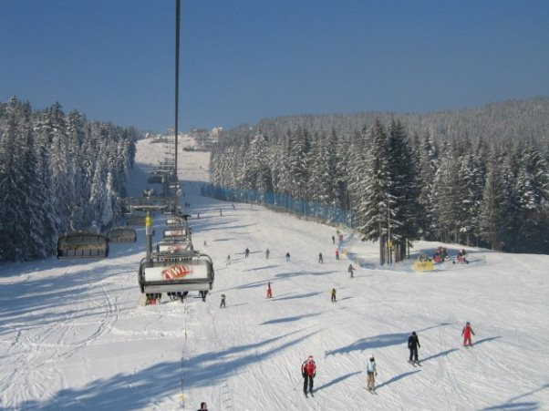

-
Witamy w Willi pod Limbami
Serdecznie zapraszamy do naszego nowo wybudowanego domu "Willa pod Limbami" inspirowanego stylem góralskim, gdzie tradycja połączona została z nowoczesnością w ściśle harmonizujący ze sobą sposób.
Każdy z 1,2,3 i 4 osobowych pokoi posiada łazienkę, TV, oraz dostęp do Wi-fi. Większość pokoi ma balkon z widokiem na Giewont oraz pasmo Gubałowskie. Do dyspozycji gości jest w pełni wyposażony aneks kuchenny z kuchenką indukcyjną, lodówką, kuchenką mikrofalową oraz urokliwym miejscem do spożywania posiłków. Przed domem znajduje się huśtawka, grill oraz zakątek gdzie miło można spędzić czas "pod limbami". Willa jest ogrodzona, usytuowana w ładnej, spokojnej okolicy w sąsiedztwie domków jednorodzinnych w stylu góralskim z zamykaną bramą na noc. Dom znajduje się zaledwie 20 minut spacerem od Krupówek. Dogodne położenie sprzyja turystyce rowerowej i górskiej - tylko 300m do ścieżki pod reglami skąd można dotrzeć do wszystkich tatrzańskich szlaków i dolin. W sąsiedztwie znajdują się: przystanek PKS/Bus, sklepy, poczta, karczmy regionalne oraz słynne na cały świat "Sanktuarium Matki Boskiej Fatimskiej" na Krzeptówkach. Dla naszych gości mamy możliwość zorganizowania kuligu, muzyki góralskiej, przewodnika tatrzańskiego, instruktora narciarstwa, chętnie służymy naszą słynną góralską gościnnością.
-
 Tatrzański Park Narodowy
Tatrzański Park Narodowy
W odległości 300m Aqua park w Zakopanem
W odległości 3,2km Sanktuarium Matki Bożej Fatimskiej na Krzeptówkach
W odległości 500m Krupówki w Zakopanem
W odległości 1,8km  Liczne stoki narciarskie w okolicy: Budzowski Wierch, Szymaszkowa, Gubałówka,
Witów-Ski i wiele innych
W odległości od 700m Karczmy i restauracje w okolicy
Karczmy i restauracje w okolicy
Dwór Ślebody w odległości 400m Skocznia Wielka Krokiew w Zakopanem
Skocznia Wielka Krokiew w Zakopanem
Wycieczki rowerowe
-
Cennik
Ceny poza sezonem:
od 30zł do 50zł
Ceny w sezonie:
od 40zł do 60zł
Zniżki dla dzieci.
W okresie świąt Bożego Narodzenia, Sylwestra i długich weekendów ceny do uzgodnienia. -
Informacje kontaktowe
Wszelkie pytania prosimy kierować drogą telefoniczną, lub emailową.
Willa Pod Limbami
Anna i Stanisław Styrczula-Maśniak
Droga do Walczaków 34A
34-500 Zakopane
Telefon komórkowy: 604-519-033
Telefon domowy: 18-20-66-024
Email: willa@pod-limbami.pl
Pokaż Willa Pod Limbami na większej mapie

{kind=link}
{kind=link}
{kind=link}
{kind=link}
{kind=link}
{kind=link}
{kind=link}
{kind=link}
{kind=link}
{kind=link}
{kind=link}
{kind=link}
{kind=link}
{kind=link}
{kind=link}
{kind=link}
{kind=link}
{kind=link}
{kind=link}